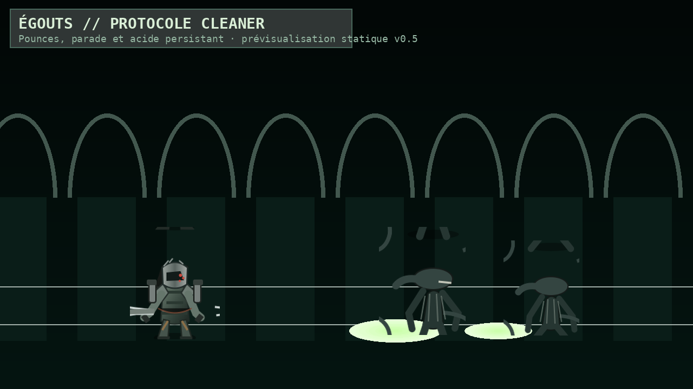
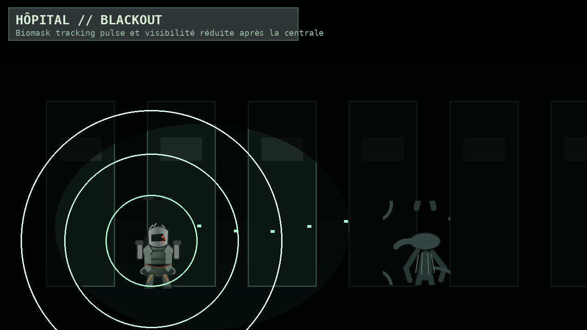
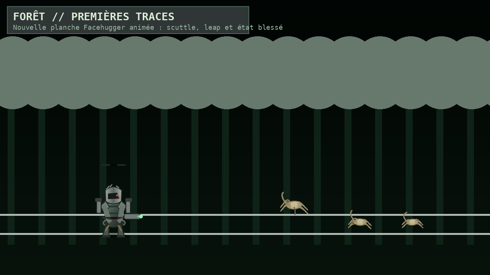
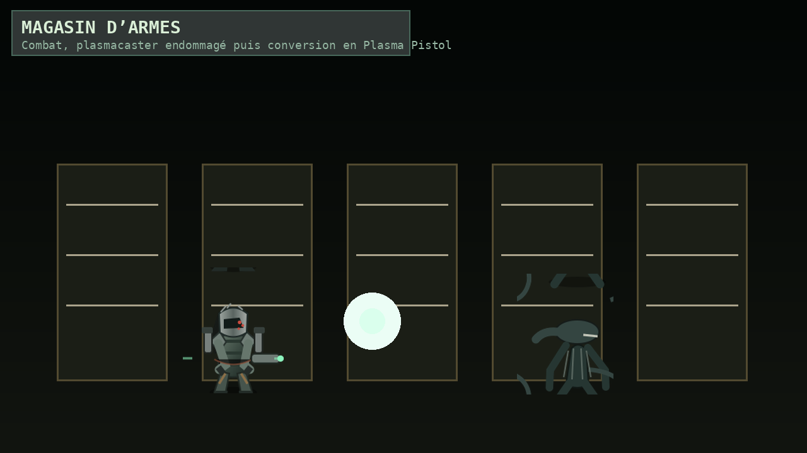
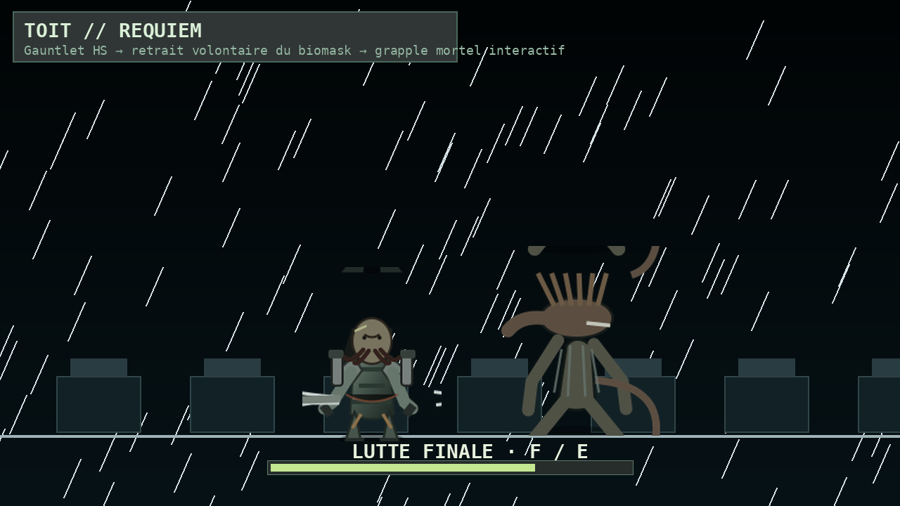
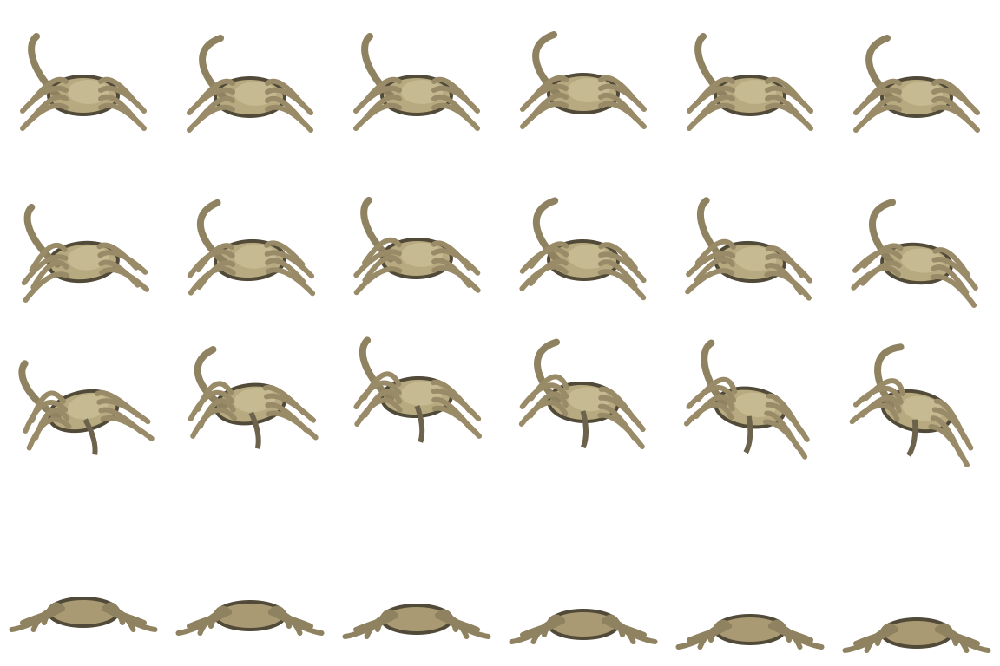

AVP:R — WOLF / v0.5
Chromium headless reste bloqué dans le conteneur ; les scènes v0.5 ci-dessous sont des prévisualisations statiques produites avec les assets réellement embarqués. Elles ne sont pas présentées comme captures d'exécution.
La passe illustre les nouvelles mécaniques de combat, le blackout, le Facehugger animé et le grapple final.





